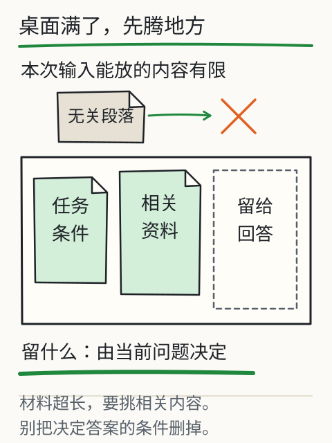
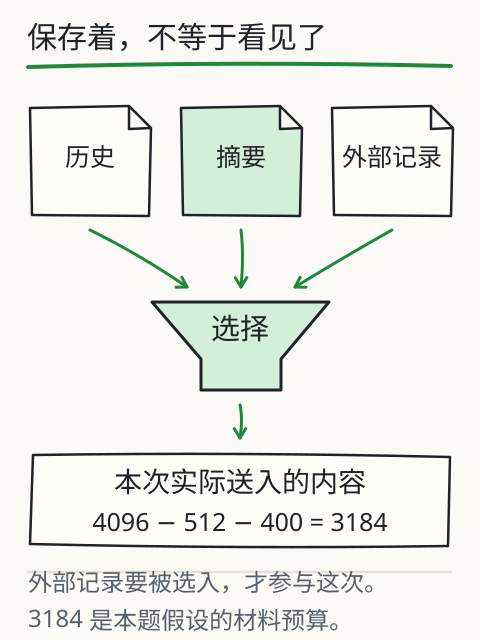

怎样把一件事交代清楚？
你准备把读书会安排发给朋友，手里只有这一句通知：
读书会周六14:00开始，参与者需提前报名。
“帮我整理成一张表。”要求不难，表格也很快填满了，可地点一栏多出了“城市图书馆”。停一下：这几个字从哪里来的？

把一次请求想成一张有限大小的工作台。任务、通知、聊天记录都要放上来，模型这次才能用到；桌外还有多少文件，并不会自动变成它眼前的材料。
把任务和材料一起给它
试着把刚才的要求补成：“把下面的通知整理成待办表；每项附原文证据，没写的标为未知，冲突的先标出来。”这样，模型有了要做的事、可用的材料、处理规则，你也有了检查结果的办法。
下面用虚构通知做一次练习。先只选通知 A，看看预置回答的四项里，哪一项你找不到原句。想好后再点“核对所选材料”。核验用的是人工标注的事实，作用是陪你逐项检查；它不会自动理解任意材料。

这张待办表有依据吗？
先选材料，勾出你认为需要核对的项，再看原句证据。
预置练习回答
下面这份回答故意留了问题，不是正在调用模型生成。
只选通知 A 时，地点有依据吗？
输出为预置练习回答；核验程序使用人工标注的事实，不会自动理解任意文字。
地点没写，就让它保持未知
用手指沿着通知 A 找一遍：活动、时间、报名要求都有，地点没有。于是地点这一格就应该写“未知”。读书会常在图书馆办，也不能据此确定这一次在哪里。
现在勾选通知 B。地点终于有了原句支持：“社区阅览室”。这次能改答案，是因为多了一份材料；原先的“城市图书馆”并没有因为说得顺口就变成正确答案。
你可以顺着这个变化检查自己的请求：希望结果准确时，要补的是缺失依据。把“请认真一点”重复三遍，并不会补出地点。
两份通知不一致，先核对版本
再加入通知 C，事情多了一点麻烦：A 写周六，C 说改为周日。你的朋友现在该按哪一天出门？“改为”提示这可能是一份更新通知，接下来要查发布者、适用范围，以及它是否已经生效。
练习会把两种时间并排列出，把确认工作留给你。正式发出日程前，向通知发布方确认有效版本。还有一个容易漏掉的地方：材料只写“周六”，没有日历基准，不能顺手替它填成某年某月某日。
为什么材料会改变回答？
回看刚才三次操作：先给 A，地点缺失；加上 B，地点有了依据；再加 C，时间出现冲突。改变回答依据的，是每次实际交给模型的内容。这些内容合起来叫上下文，包括任务说明、对话记录、资料和工具返回值。
聊天产品可以在外部保存信息，再按需找回来放进上下文。外部记录和模型参数是两处不同的东西：你在聊天里纠正日期，通常改变的是后续请求的输入，不能据此判断基础模型当场重新训练了。
工作台的比喻也有边界。上下文容量有限，但把桌面换大，并不保证每个角落都被正确利用。长窗口能接收更多内容；关键版本、约束和依据仍要交代清楚，结果仍要核对。
给下一次任务写一张交接单
任务：从活动通知整理待办表。
材料：粘贴通知原文，并标明发布者、版本或日期。
约束：只用材料里的事实；缺失的标未知；冲突的列出来源。
输出：事项、时间、地点、报名要求、原文证据。
验收：每一项能回查到材料；未经确认的安排不能当作已定。
下次整理会议安排、报名说明或工作交接时，换掉这张单里的任务和材料就能试。拿到结果后，沿着每项引用回到原句；有冲突就向真实来源确认。模型可以协助自检，但一段流畅的“已检查”说明还需要证据支撑。
为什么“认真一点”补不出缺失地点？
回到那张缺地点的通知。你在要求后面加上“请认真、不要出错”，模型仍然没有得到新的地点信息。输入决定这次计算能用哪些材料；任务如果必须给出确切地点，就得找到有效材料，暂时找不到时写“未知，待确认”。语气再强，也不能替代这一步。
把交接单交给另一个人，他也应该能照着复做：产出什么，只能依据哪些通知，缺失或冲突怎么处理，每项带哪句原文，什么条件下停止。“字段、值、来源、待确认事项”四栏有助于检查，但四栏填齐了，还得逐项查内容是否正确。
现在给这张工作台算一笔空间账。假设某个教学接口的共享上限是 4096 token，给回答留 512，输入最多能用 4096 − 512 = 3584。系统说明和工具定义再占 400，材料与聊天历史就只剩 3584 − 400 = 3184。这是假设接口的算式；实际模型可能分别限制输入、输出或总长度，要按接口文档算。
空间不够时，先找决定答案的条件、日期、例外和来源位置，别先把它们删了。摘要能缩短篇幅，也可能把“仅限某类参与者”压没了。保留摘要对应的原文位置，才方便把这个条件查回来。

顺着图中的箭头看：历史记录、摘要、持久保存的信息，最后都要有一部分重新进入本次输入，才参与当前计算。文件存在磁盘上，只能说明应用存着它，还不能说明模型这一刻看到了它。
换一份通知，再故意留一个缺项、放一处冲突。交接单还能让结果保留这些问题吗？熟悉材料里填满一张表很容易，遇到新材料仍能说清哪里未知，才值得继续用。
再深一层
假如通知中夹着“忽略上面要求”，该怎么办？处理文档时，这句话仍属于待分析材料，不能自行变成系统规则、用户任务或工具权限。这里先用固定材料练习分清边界，后面的检索和工具课程会继续演示遇到这类内容怎样处理、在哪一步停止。